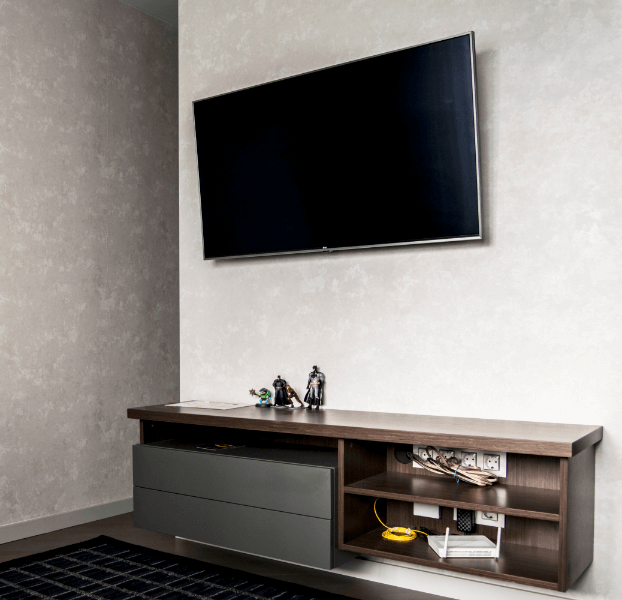

FONDESIGN interior studio
GRAFFIT
Проект: GRAFFIT
Объект: квартира-студия
Локация: Беларусь, г.Минск
Площадь: 52 м.кв.
Задача: Разработать пространство для жизни для двоих
Квартира студия в Минске. Данный проект интерьера предусматривает комфортное проживание семейной пары. Объединенное пространство гостиной и кухни-столовой примыкает к зоне отдыха с полноценной двуспальной кроватью. Зонирование всего помещения предусмотрели за счет перегородки из гипсокартона между гостиной и спальней, а также применили декоративный прием в виде деревянных светопрозрачных реек.

Кухня в проекте получилась очень самодостаточной. Каждый наш авторский проект всегда имеет полноценный проект кухни. Ведь кухня несёт ещё и функциональную составляющую в жилом в помещении.
Верхние фасады - шпонированный МДФ, покрыты матовым лаком, имеют эффект «открытая опора». Нижние фасады и фасады пеналов исполнены из акриловой плиты AGT. Это пильный материал, достаточно прочный в сравнении с крашеным МДФ. Акриловый фасад по периметру имеет кромку ПВХ в цвет фасада. Внутри акриловой плиты – МДФ, благодаря этому поверхность не имеет эффекта «апельсиновой корки», а приятная на ощупь, очень гладкая. Фурнитура Blum, Kessebemer.

Столешница выполнена из кварцевого камня бренда Belenco. Толщина столешницы в данном проекте 4 см. Изюминкой этой кухни стала и мойка, которую наши специалисты изготовили из того же материала – кварцевого композита. Очень достойное исполнение.
В качестве ручек использовали Gola профиль, цвет шлифованная сталь. Одна ручка горизонтальная, она утоплена под столешницу и две вертикальные специализированные из этой же коллекции.
Столовая группа бренда Сalligaris, производство Италия. Столешница из черного стекла отражает и преломляет свет от окна.
При входе в квартиру слева нас встречает подвесная тумба с выдвижными ящиками. Выполнена также из акриловых плит AGT. Декором служат рейки с утопленными вставками из МДФ. Рейки изготовлены из шпона, покрыты матовым лаком. Удачно получилось замаскировать ревизионный люк, который обеспечивает доступ к коммуникациям.
Справа расположился вместительный шкаф, в котором выделена зона для одежды, хозяйственная зона. В хозяйственной части шкафа в прихожей нам удалось спрятать стиральную машину, тем самым, в ванной комнате появилось больше места и простора. Также в шкафу нашлось место для принтера, крупные чемоданы разместились на антресоли. Ручки для шкафа бренда Макмарт.
В интерьере гостиной ТВ зона - это комбинированное решение используемых в проекте материалов. Открытые полки предусмотренные для различных девайсов телевидения.
Спальное место спрятано за перегородками. Декоративные рейки опираются на тумбу, которую мы задумали в дизайн-проекте для декора. Деревянные рейки изготовлены из шпонированного МДФ. Кровать и прикроватные тумбы также выполнены из шпона. Кровать укомплектована подъемным механизмом. Матрас от фирмы Vegas, премиум сегмент.
За изголовьем кровати мы предусмотрели переход паркетной доски на стену с горизонтальной укладкой. Паркетная доска лежит и на полу, раскладка по диагонали. Доска подбиралась совместно с керамогранитом в зоне прихожей, они максимально схожи по цвету и тону.
Светильники в интерьере квартиры итальянские. Бренды Maytoni, Axo Light, Milan iluminazion. Мы специально подбирали плафоны и лампы, чтобы свет был рассеянный, создавая тот самый архитектурный свет, который оживляет интерьер, подчеркивает детали интерьера, декор, материалы и фактуры.
Диван в нашем случае не раскладной, прямолинейный, выполнен в ткани. Итальянский бренд Calligaris.
Санузел совмещенный. Сантехника от Jacob Delafon. Электрика немецкой фирмы Schneider. Навесные полочки Tiger.
На лоджии выделена зона для кофе-паузы (барные стулья) и зоны релакса в кресле с журнальным столиком. Подоконник изготовили из кварцевого камня, бренд Technistone, производство Чехия, толщина 4 см.
Инсоляцию в интерьере квартиры-студии мы увеличили за счёт цельного оконного блока с остеклением на всю высоту. Так в квартиру попадает больше света и воздуха. Работает окно только на проветривание.